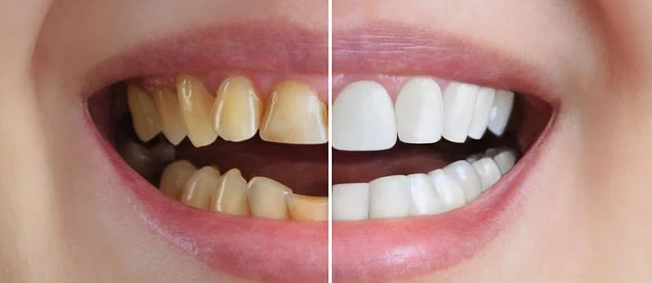

Volver al inicio

Cómo puedo ayudarte a mejorar tu sonrisa?
Es la especialidad que mejora el aspecto de tus dientes y encías para lograr una sonrisa armoniosa. Corrige el color, la forma, el tamaño y la alineación, garantizando siempre la funcionalidad..
Tratamientos más comunes
- Blanqueamiento dental Reduce manchas y aclara varios tonos el esmalte dental
- Carillas dentales Láminas finas de porcelana o resina (composite) que cubren la parte frontal del diente para modificar su forma o color.
- Adhesión dental: Reparación de pequeñas fracturas o caries con resinas del color del diente.